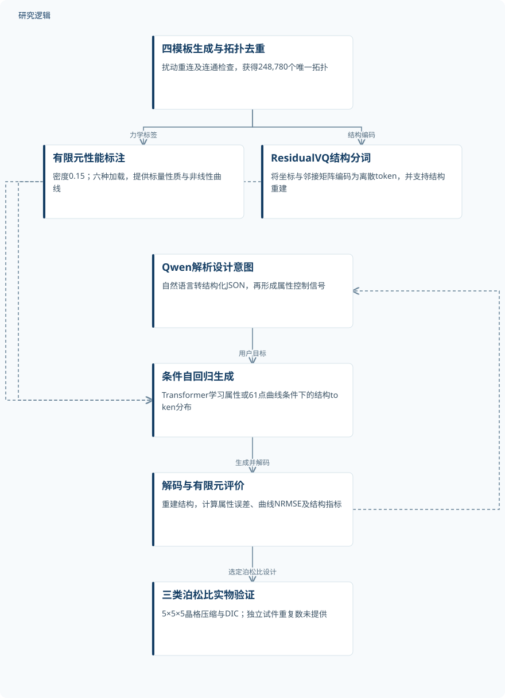
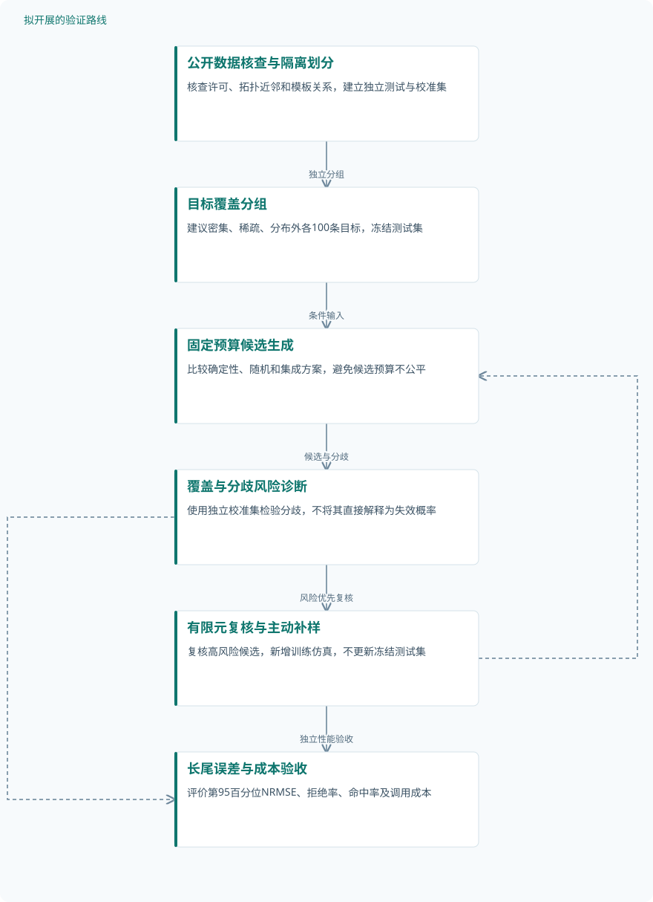

论文精读
TrussGPT：大语言模型驱动的桁架超材料逆向设计框架
TrussGPT: large language model-driven inverse design framework for truss metamaterials
精读更新 2026-10-03 15:39 · 依据论文全文整理
从指定力学性能到生成桁架结构，难点不仅是搜索速度，还包括多目标匹配、非线性响应和设计意图的准确表达。TrussGPT把语言交互、图结构分词与自回归生成连接起来，并通过有限元评估和泊松比实物试验检验设计效果。本文依据提供的原文核对资料精读，不以旧摘要替代方法与结果；重点区分生成速度、性能精度与可靠性证据，并提出两条可检验的后续研究路线。
文章目录
逆向设计的瓶颈：反复搜索之外，还有目标表达
桁架超材料依靠节点布局和杆件连接调节宏观力学行为，但给定性能并不能唯一确定结构。作者指出，传统方法往往需要“a separate optimization run with many homogenization evaluations for each target”，因此每次改变目标都可能重新承担搜索成本。将一次训练转化为重复调用的条件生成器，是本文解决这一问题的主要思路。
这里的大语言模型并不直接承担全部力学推理，而是帮助用户表达目标、调用结构生成并解释输出。已有相关工作《Large Language Model Agent as a Mechanical Designer》的检索摘要采用语言模型与有限元反馈迭代修改二维桁架；TrussGPT则把快速生成交给专门训练的结构模型。两者代表不同技术组织方式，现有资料不足以建立直接性能排名。
把桁架变成结构语言，再按性能逐步生成
结构首先由八分体单元表示，其中包含15个预定义候选节点，再通过三个坐标平面的镜像构造完整单胞。Truss-Tokenizer把坐标矩阵和二值邻接矩阵编码为连续潜变量，使用多阶段ResidualVQ量化残差，得到离散结构token并支持图结构重建。这种表示压缩了生成空间，但其镜像对称和节点配置也限定了能够探索的结构族。
TrussGPT-Designer采用类似GPT-2的仅解码器Transformer，将属性条件置于序列前端，以交叉熵训练自回归token预测。曲线条件按式(1)在0≤ε≤0.6均匀取61点，学习p(indices|σ)；Qwen交互模块则把语言请求解析为结构化JSON并返回解释。条件输入不是物理约束满足的证明，性能仍需独立有限元评价，且现有资料未提供生成阶段的显式物理损失或稳定性硬约束。
TrussGPT原研究：语言条件到结构验证


图示区分数据构建、结构模型与语言接口；有限元和实物验证是不同证据层级，未将语言预测或目标数值视为实测结果。依据提供的原文核对资料。
下载 SVG图示关系说明
实线表示相邻阶段的信息流，虚线表示跨阶段联系或反馈。
四模板生成与拓扑去重 → 有限元性能标注：力学标签；四模板生成与拓扑去重 → ResidualVQ结构分词：结构编码；有限元性能标注 → 条件自回归生成：训练条件；ResidualVQ结构分词 → 条件自回归生成：监督token；Qwen解析设计意图 → 条件自回归生成：用户目标；条件自回归生成 → 解码与有限元评价：生成并解码；解码与有限元评价 → Qwen解析设计意图：语义反馈；解码与有限元评价 → 三类泊松比实物验证：选定泊松比设计
唯一拓扑、留出曲线与实物压缩：三层证据
作者从BCC、SC、SC_S和FCC模板出发，经扰动、重连、连通性检查及去重，得到248,780个“unique topologies”，不是同等数量的实体试件或增强数据。每个单胞在固定相对密度0.15下进行六个加载仿真，采用B31梁、周期边界、几何非线性与自接触；训练、验证、测试规模及模板隔离规则未提供。曲线实验另有2,000条未用于训练的目标，但这不等于已经证明训练与测试拓扑家族独立。
标量每目标及多属性每配置生成200个结构，五种约束场景比较VAE-GD、VAE-GA和VAE-PSO，尚无模块消融证据。实物把三种目标单胞组装成5×5×5晶格，用压缩和DIC测量；周期单胞数不能当作独立试件数。正文称聚合物树脂，方法却列Nylon PA12与HP Jet Fusion 4200，材料描述存在待核查的不一致，重复试件数及测量不确定度也未提供。
| 验证任务 | 样本与规模 | 主要结果 |
|---|---|---|
| 拓扑数据构建与有限元标注 | 248,780个有效且拓扑唯一的结构；每个单胞六次独立加载仿真。仿真总数、增强数量、模板各自数量及原始候选数未报告于提供资料；六次加载不是六个独立拓扑。 | 得到248,780个唯一拓扑；采用圆截面B31梁、几何非线性、周期边界RVE均匀化，法向硬接触、切向罚函数摩擦系数0.3，弹塑性参数由基材压缩标定。 |
| 单性质与多性质条件生成 | 每个单性质目标、每个多性质配置生成200个结构并进行有限元评价；多性质配置总数未提供。 | E33密集区有效性>99%、唯一性98–100%；0.03目标MAPE=2.21%，0.04、0.05目标分别为3.42%、4.48%。ν21多数目标有效性>97%、最低95%，正值丰富区MAPE<20%，部分条件16.68%。双性质两项误差均>20%、均>50%的平均概率分别11.1%、约1.8%。 |
| 2,000条留出应力–应变曲线的采样对比 | 2,000条目标曲线；确定性每目标一次，随机采样每目标多次，但随机候选总数和预算未提供。 | 确定性NRMSE中位数7.5%、均值11.0%，新结构22.3%；随机采样中位数9.3%、均值14.4%，新结构35.8%。图5四个确定性展示误差为4.84%、3.12%、2.70%、0.79%。 |
| 五种性能约束与VAE搜索基线比较 | 每种方法、每个场景生成200个有效结构；独立重复运行数、候选尝试数及随机种子数未提供。 | TrussGPT耗时1.4–1.5秒；四性能场景为1.4秒，VAE-GD为7686.2秒、VAE-PSO为4343.5秒。作者报告TrussGPT各场景MAPE最低、有效率最高，逐场景精确值未提供。 |
| 三类泊松比晶格的制造与压缩验证 | 三种目标，每种生成一个优化单胞；独立实体试件总数和每组重复数未提供。125个周期单胞与DIC三条跟踪线均不是独立试件数。 | 实测泊松比分别0.49、−0.03、−0.51；正、零、负目标对应横向膨胀、近似不变与收缩。 |
展开数据来源、分组、对照与验证边界
拓扑数据构建与有限元标注
数据来源。自建桁架数据；BCC、SC、SC_S、FCC四类模板经扰动、连接重构与后处理生成。作者给出百度网盘数据链接和GitHub代码链接，但本次未实际访问或下载。
分组与工况。相对密度固定0.15；x、y、z单轴压缩及xy、yz、zx剪切。采用单一基材、15个候选节点及中等扰动强度。
数据划分。训练、验证、测试比例和数量，以及模板或拓扑家族隔离规则：提供资料未报告。
对照与消融。数据生成策略、模板贡献、扰动强度消融和其他有限元单元对照：提供资料未报告。
评价指标。连通性要求单一连通分量；上三角邻接指纹用于拓扑去重。有限元提供模量、泊松比和应力–应变响应。
验证边界。基材具体参数、网格收敛、标定试件数及误差未提供。宏观压缩60%时局部轴向应变−17.47%至12.88%的检查，不替代跨结构统计或其他单元验证。
单性质与多性质条件生成
数据来源。共同有限元标注数据；模量按基体杨氏模量E=1无量纲化，方向1、2、3对应x、y、z。
分组与工况。E33目标0.01、0.02、0.03、0.04、0.05；ν21目标−1、−0.5、0、0.5、1。多性质包括(E33,ν21)、(E11,E22,E33)、(E11,E22,E33,ν21)。
数据划分。提供资料未报告完整划分；不能据目标所在的密集或稀疏区域推断数据集划分。
对照与消融。比较训练属性分布与生成属性分布，以及不同条件组合；不是组件消融。
评价指标。有效性检查连通及无断开或悬挂子结构；唯一性比较有效输出邻接矩阵；新颖性比较训练集邻接哈希。式(2)：MAPE=(1/n)Σᵢ|(Pᵢ−T)/T|×100%，Pᵢ来自有限元。
验证边界。ν21=0的MAPE未定义并排除比较。四属性远离训练域时100%新颖性伴随误差和变异增大，不等于可靠满足目标；补充表1、2、5未提供。
2,000条留出应力–应变曲线的采样对比
数据来源。未用于训练的目标曲线，与生成结构有限元响应比较；条件曲线采用式(1)的61维应力向量。
分组与工况。确定性逐步选择最可能token；随机策略从学习分布采样。另讨论密集、稀疏和分布外区域，但各组数量与阈值未提供。
数据划分。2,000条曲线未用于训练；与训练结构之间的拓扑独立性规则未提供。
对照与消融。确定性与随机采样互为策略对照；其他模型对照及组件消融未提供。
评价指标。式(3)：NRMSE=sqrt[(1/m)Σⱼ(yⱼpred−yⱼtrue)²]/[max(ytrue)−min(ytrue)]，无量纲，结果以百分比报告；新颖性为相对训练集的新结构比例。
验证边界。展示案例处于低误差部分；总体有高误差长尾，随机策略更重。恒定目标曲线NRMSE为NaN，随机预算缺失限制公平比较。
五种性能约束与VAE搜索基线比较
数据来源。作者描述在相同VAE潜空间、同一计算平台和相同运行条件下比较；硬件规格与完整计时边界未提供。
分组与工况。ν21=−0.5；E33=0.03；(E33,ν21)=(0.01,0.9)；三个模量均0.02；(E11,E22,E33,ν21)=(0.01,0.01,0.01,0.5)。
数据划分。比较子集划分及各目标的训练覆盖关系未提供。
对照与消融。VAE-GD采用Adam，最多1200步、学习率5×10⁻³、连续200步无改善早停；PSO为60粒子、120次迭代；GA为每代60个体、120次迭代。基线单线程顺序执行，TrussGPT对应执行细节未完整提供；组件消融未提供。
评价指标。有效性、唯一性、新颖性、MAPE和生成时间。图6分段条形展示不同场景绝对值，累计长度不能视为单场景结果。
验证边界。Supplementary Table 4未提供，不能补写精确性能或VAE-GA时间；无重复运行波动或显著性检验资料，时间公平性仍需核查。
三类泊松比晶格的制造与压缩验证
数据来源。生成单胞组装为5×5×5周期晶格，准静态压缩结合DIC。正文描述聚合物树脂，方法列Nylon PA12及HP Jet Fusion 4200，材料对应关系待核查。
分组与工况。目标ν21为+0.5、0、−0.5；方法给出压缩速率1 mm/s。其他加载分组未提供。
数据划分。三个目标与训练数据的关系未提供。
对照与消融。目标与测量对照；传统设计、未优化晶格及组件消融未提供。
评价指标。DIC纵向与横向应变用于泊松比计算；图7横向位移单位mm。拟合应变区间与测量不确定度未提供。
验证边界。缺少独立重复数、误差条和材料描述一致性核对；尚无完整曲线设计、疲劳、多材料或动态响应的实物验证结果。
速度优势清晰，精度边界不能被低误差示例遮蔽
E33=0.03时MAPE为2.21%，而泊松比数据丰富区域的MAPE仍接近两位数，不能把总体“below 5%”推广到全部任务。曲线确定性采样NRMSE中位数、均值为7.5%、11.0%，随机采样为9.3%、14.4%，对应新结构比例22.3%、35.8%；图5属于低误差区域而非典型表现。双属性两项误差同时超过20%的平均概率11.1%，也不是任一属性失败的概率。
生成200个有效结构耗时1.4–1.5秒，对照通常需3000至超过7500秒，支持快速提案能力，但硬件、完整计时边界和重复运行波动仍需核查。三类泊松比目标+0.5、0、−0.5对应实测0.49、−0.03、−0.51，支持特定结构的可制造实现，却未证明疲劳或动态可靠性。式(2)MAPE在零目标失效，式(3)NRMSE以目标应力极差归一化、恒定曲线记NaN；下一步应优先修补覆盖与评价边界，而非只追求新颖性。
从这篇论文走向下一项研究
以下为结合研究方向提出的候选方案，实验设计与预期目标有待验证。
面向稀疏目标的覆盖感知生成与有限元闭环
问题与短板。本文的主要短板是负泊松比及分布外曲线覆盖不足，且随机采样用更高误差换取新颖性。建议把目标覆盖诊断与校准后的拒绝机制加入生成流程，优先处理长尾失败，而非只优化平均误差。
改进机制。先用训练属性空间邻域密度识别稀疏目标，再以生成器集成估计候选分歧，由有限元复核和主动补样更新模型。模型分歧只是风险线索，必须用独立校准集检验，不能直接当作可靠概率。
候选创新。候选创新是将覆盖诊断、固定候选预算和可拒绝输出组合进token生成，而不是提出新的有限元反馈概念。相关《Large Language Model Agent as a Mechanical Designer》摘要已有反馈迭代，《MetamatBench》摘要已有有限元评价，本路线需证明组合收益。
数据与实验设计。建议设计：从作者公开数据和代码起步，核查许可及完整性；按模板与拓扑近邻隔离训练测试，设置密集、稀疏和分布外三组，每组100条目标。新补样需计算采集，固定每目标候选预算并另设校准集，不预设已有算力。
对照与消融。比较原确定性、原随机采样、同预算随机补样及完整闭环，逐项移除密度诊断、集成分歧和主动补样。所有方法共享有限元调用预算、硬件和计时范围，分别记录生成成本与补样训练成本。
成功判据。建议预注册：稀疏与外推组曲线NRMSE第95百分位相对原策略下降至少20%，密集组中位数恶化不超过1个百分点。同步报告拒绝率、唯一性、有效目标命中率及实际有限元调用量，避免筛选制造虚假提升。
风险与替代方案。拓扑邻近未必对应力学邻近，集成也可能共同自信出错；先检验分歧与实际误差关联。若校准无效，替代路径是明确限定支持域，并用有限元逐个验收候选，承认增加的计算成本。
把制造偏差与循环损伤纳入桁架可靠性设计
问题与短板。三类泊松比压缩结果支持目标变形，却没有循环寿命、制造离散性或失效概率证据。建议保持原节点空间和材料条件起步，只增加少量可测不确定因素，避免同时拓展全部设计维度。
改进机制。以杆径偏差和节点缺陷建立随机几何模型，结合循环载荷下的局部应力或应变响应训练寿命代理，再把可靠性筛选接到条件生成之后。损伤模型应由相应材料试验标定，静态曲线不能直接换算疲劳寿命。
候选创新。候选创新是联合评价目标性能命中、制造扰动敏感性与寿命下分位数，使结构新颖性服从可靠性要求。相关视频扩散论文的检索摘要已处理屈曲与接触的非线性响应，但未据此证明循环寿命，本路线属于待验证扩展。
数据与实验设计。建议设计：选三种候选拓扑，设置名义、随机杆径偏差、局部节点缺陷三组，每组每拓扑五件，共45件。公开结构数据可用于初始化，但几何偏差和循环试验需另采集；材料描述核清后再委托或合作测试，不假定已有仪器。
对照与消融。比较仅按静态性能选择、按最坏扰动选择和概率可靠性筛选三种方案，并消融制造随机性、寿命代理和主动更新。匹配相对密度、材料批次及载荷条件，试件级划分防止同件多循环记录泄漏。
成功判据。建议预注册：在相同静态目标容差下，可靠性筛选方案的寿命下分位数优于静态选择，并报告置信区间和失效模式。小样本不足以宣称极低失效概率，需同时公布未失效截尾数据及代理校准误差。
风险与替代方案。梁模型可能遗漏节点应力集中，制造缺陷也可能无法准确复现。先对关键节点进行局部实体有限元复核；若45件不足以估计寿命尾部，则退回扰动敏感性排序和单调损伤趋势验证，暂不输出寿命可靠性承诺。
后续建议：覆盖感知与有限元主动补样


对应第一条研究路线，全部为建议流程；长尾误差下降与校准效果尚待实验检验，不是原论文实测结果。
下载 SVG图示关系说明
实线表示相邻阶段的信息流，虚线表示跨阶段联系或反馈。
公开数据核查与隔离划分 → 目标覆盖分组：独立分组；目标覆盖分组 → 固定预算候选生成：条件输入；固定预算候选生成 → 覆盖与分歧风险诊断：候选与分歧；覆盖与分歧风险诊断 → 有限元复核与主动补样：风险优先复核；有限元复核与主动补样 → 固定预算候选生成：补样更新训练；有限元复核与主动补样 → 长尾误差与成本验收：独立性能验收；覆盖与分歧风险诊断 → 长尾误差与成本验收：记录拒绝与校准